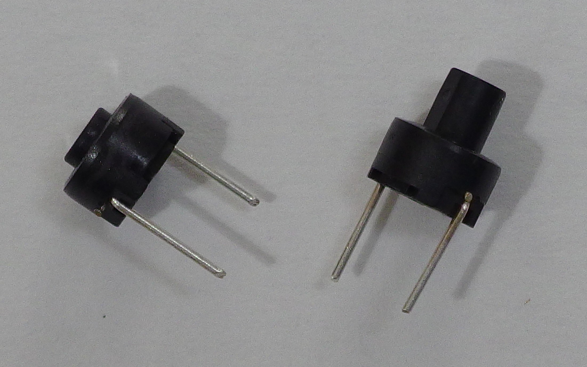

Debouncer

R1 ≪ R2 :
τ ≈ C × R2
I ≈ V / R1 (resistive)
V = 3.3 V, R1 = 1 kΩ, R2 = 10 kΩ, C = 1 μF
τ ≈ 1 μF × 10 kΩ = 10 msec
I ≈ 3.3 V / 1 kΩ = 3.3 mA
The SKRG is a series of radial type tactile switches. It has a diameter of 6.2 mm.

| Part number | Height | Color |
|---|---|---|
| SKRGAAD010 | 4.3 mm | Black |
| SKRGALD010 | 7 mm | Black |
R1 ≪ R2 :
τ ≈ C × R2
I ≈ V / R1 (resistive)
V = 3.3 V, R1 = 1 kΩ, R2 = 10 kΩ, C = 1 μF
τ ≈ 1 μF × 10 kΩ = 10 msec
I ≈ 3.3 V / 1 kΩ = 3.3 mA